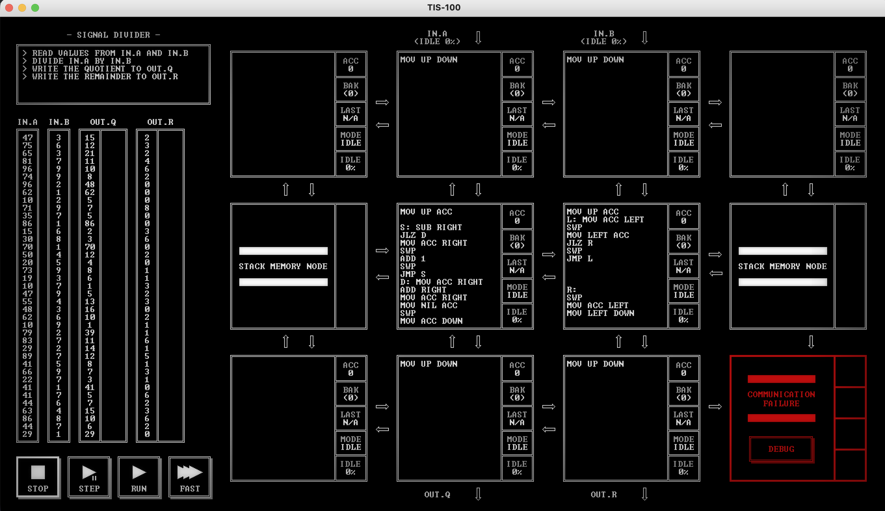
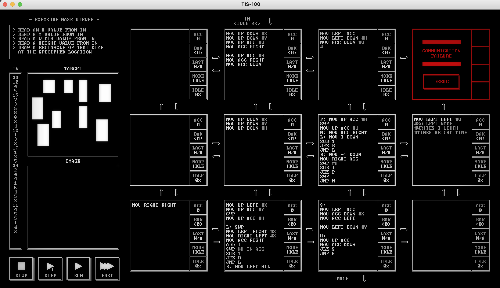
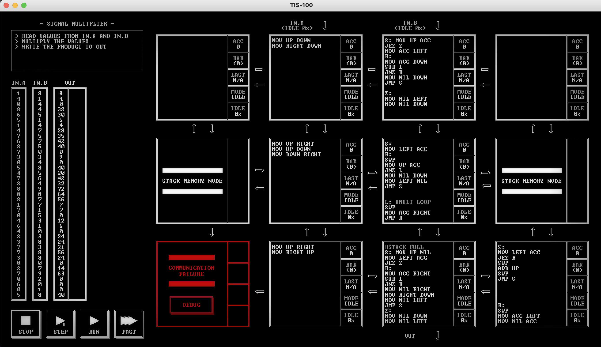

Tis-100 is a neat programming game by Zactronics, the plot of the game is essentially you've inherited an old computer from
your uncle after his untimely demise. You ostensibly want to figure out what your uncle was doing and decide to continue
his work fixing this computer. Yada yada yada, you solve a bunch of puzzles with the constraints of the computer,
the fun thing about tis-100 is it's emulating a massively parallel computer architecture, a bunch of independent nodes
that can only communicate directly with their immediate neighbors. It leads to some neat puzzles, below are some of my
favourite solutions to them.
Below is my solution to remainder division, my favourite bit about this is how the two middle nodes basically do everything,
and keep eachother updated, one keeping track of the remainder, one keeping track of how many times B divides A.


